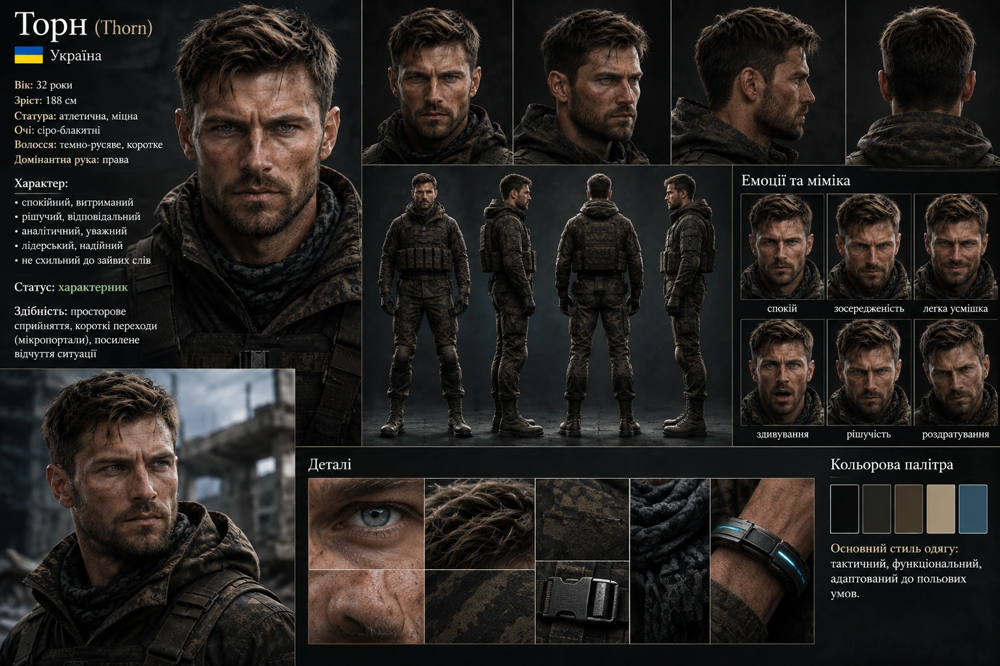

ОСНОВНА ІНФОРМАЦІЯ
Снайпер із багаторічним бойовим досвідом
Торн — позивний досвідченого снайпера, який тривалий час діяв самостійно в сірій зоні. Він умів знаходити непомітні позиції, терпляче вистежувати цілі й залишатися там, де інші не витримували б і кількох днів.
Ім’я: Торн — позивний; справжнє ім’я не розкривається
Спеціалізація: снайпер, спостереження та приховане переміщення
Попередня належність: ворожий бік
Вік: у рукописі не зазначений
Стан здоров’я: після полону тіло відновлене, зокрема стара травма ноги
Нові здібності: відкривання порталів
ІСТОРІЯ ТА ХАРАКТЕР
Від переконаності до сумнівів
На початку війни Торн добровільно долучився до бойових дій, вірячи словам про «визволення» та правильність своєї участі. З часом побачені руйнування й загибель людей поступово підірвали ці переконання. Він не наважувався остаточно поставити під сумнів усе, у що колись повірив, і дедалі більше зосереджувався на самій війні.
Торн звик мислити холодно, не піддаватися першому імпульсу й аналізувати незрозумілі ситуації. Самотність його не обтяжувала: що менше людей поруч, то менше випадкових помилок. У полоні він не впадає в паніку, а намагається зібрати факти й зрозуміти, що з ним сталося.
НАВИЧКИ ТА ЗДІБНОСТІ
Снайперська майстерність і портали
Його багаторічний досвід — це вибір позиції, оцінка відстані, вітру й траєкторії, маскування та вміння зникати з поля зору. Боєприпаси й припаси він отримував за допомогою невеликих безпілотників, майже не контактуючи з іншими людьми.
Після полону Торн виявляє здатність відкривати портали. Спершу переходи даються повільно: він надто довго обирає точку й намагається зробити портал ідеальним. Під час тренувань вчиться сприймати портал як швидку зміну позиції. Його снайперське мислення добре поєднується з новою здібністю: він одразу шукає місця, звідки можна спостерігати, залишатися непоміченим і контролювати сектор.
ПОДІЇ ТА ВЗАЄМИНИ
Полон і новий етап
- Під час тривалого протистояння Торн веде полювання на бійця, який постійно вислизає з його пасток. Обидва дістають поранення, а вирішальна зустріч закінчується поразкою Торна.
- Після полону його тіло відновлюють настільки повно, що зникають навіть наслідки давніх травм.
- Ігор приходить до нього після пробудження. Торн упізнає знайомі рухи й поступово пов’язує їх зі своїм попереднім досвідом на фронті.
- Під час тренувань Торн опановує портали та вчиться поєднувати їх із навичками снайпера.
Що рукопис не уточнює
Справжнє ім’я, точний вік, зріст, місце народження, родина та повна військова біографія Торна не встановлені. Не додаю цих відомостей до канону.